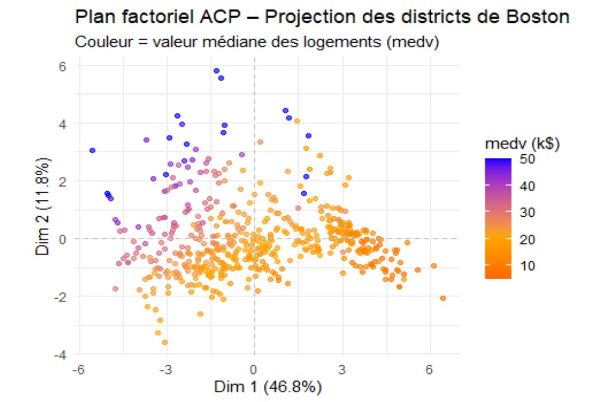

Reporting d'une Analyse Multivariée — Fouille de Données Immobilières de Boston

🔍 AgrandirCadre du projet & Objectifs
Cette étude explore la structure sous-jacente du jeu de données Boston, qui décrit 506 quartiers de la ville de Boston à travers 14 variables quantitatives. L'objectif est d'identifier les facteurs clés influençant la valeur médiane des maisons (medv) et de caractériser les différents profils de quartiers, via une approche d'analyse exploratoire multidimensionnelle combinant ACP et AFCM.
Étapes de réalisation
Compréhension & préparation des données
Chargement du dataset Boston (506 observations, 14 variables, aucune valeur manquante), inspection de la structure, calcul des statistiques descriptives. Les variables couvrent des dimensions socio-économiques (criminalité, pauvreté), structurelles (nombre de pièces, ancienneté), environnementales (pollution, distance aux emplois) et fiscales (taxes foncières).
Analyse univariée & bivariée
Visualisation des distributions via histogrammes : détection d'asymétries fortes (crim, zn, tax) et d'une distribution bimodale pour tax. Matrice de corrélation révélant des relations clés : medv corrèle fortement avec rm (+0.70) et négativement avec lstat (-0.74). Quasi-colinéarité entre tax et rad (r ≈ 0.91).
Analyse en Composantes Principales (ACP)
ACP appliquée aux données centrées-réduites. Les 4 premières composantes expliquent 74,5% de la variance totale. L'Axe 1 (46,8%) définit un gradient de qualité urbaine opposant quartiers défavorisés/pollués aux quartiers résidentiels chers. L'Axe 2 (11,8%) capture l'étalement urbain. La projection des individus montre un gradient de couleur très net de medv le long de l'Axe 1.
Analyse Factorielle des Correspondances Multiples (AFCM)
Discrétisation de 7 variables clés (crim, nox, rm, age, lstat, medv, rad) en 3 modalités équilibrées (faible / moyen / élevé) via les terciles. L'AFCM confirme et enrichit les résultats de l'ACP : trois profils de quartiers distincts émergent — aisé, intermédiaire et dégradé — en capturant des relations non-linéaires invisibles à l'ACP.
Résultats & Interprétation
Un marché immobilier fortement segmenté
La valeur médiane des maisons est structurée par un "gradient de qualité urbaine" défini par deux groupes de facteurs opposés. Côté positif : nombre de pièces élevé (rm), faible proportion de population défavorisée (lstat), faible criminalité. Côté négatif : forte pollution (nox), logements anciens (age), présence d'industries. Trois profils de quartiers ressortent clairement : quartiers aisés (grands logements, faible criminalité, prix élevés), quartiers défavorisés (forte criminalité, pollution, prix bas) et quartiers intermédiaires.
💡 Ce que j'ai retenu
Combiner ACP (analyse quantitative) et AFCM (analyse qualitative) sur les mêmes données apporte une vision bien plus complète. L'ACP a permis de visualiser les corrélations dominantes, l'AFCM de confirmer la structure de façon robuste aux valeurs extrêmes. La redondance entre tax/rad et nox/indus suggère qu'en modélisation prédictive, il faudrait sélectionner un sous-ensemble de variables non colinéaires.
Ce que ça m'apporte en entreprise
Les analyses multivariées (ACP, AFCM) sont au cœur de nombreux projets en entreprise : segmentation client, scoring de risque, analyse de marché, réduction de dimensionnalité avant du machine learning. Savoir conduire, interpréter et restituer ce type d'analyse dans un rapport structuré est une compétence attendue dans les équipes data et conseil. La maîtrise de R et des packages FactoMineR/factoextra est un standard dans les secteurs finance, marketing et santé.
Positionnement par rapport aux ACs
| Apprentissage Critique | Statut | Commentaires |
|---|---|---|
| AC22.03 Comprendre l'intérêt des analyses multivariées pour synthétiser l'information |
A | ACP et AFCM appliquées et interprétées sur 14 variables. Réduction de 14 dimensions à 4 composantes expliquant 74,5% de la variance. Identification claire du gradient de qualité urbaine sur l'Axe 1. |
| AC22.01 Appréhender les différents types de données et leurs caractéristiques |
A | Analyse des distributions (asymétries, bimodalité de tax), détection de colinéarités (tax/rad, nox/indus), choix de discrétisation par terciles pour l'AFCM. |
| AC22.02 Maîtriser les bases de la statistique inférentielle |
P | Utilisation de corrélations et d'indicateurs de variance expliquée. L'étude reste exploratoire — une validation par tests statistiques formels renforcerait les conclusions. |
| AC13.05 Comprendre les intérêts de la data visualisation et de l'infographie |
A | Cercle des corrélations, graphique éboulis, plan factoriel individus coloré par medv, carte des modalités AFCM — chaque visualisation répond à une question analytique précise. |